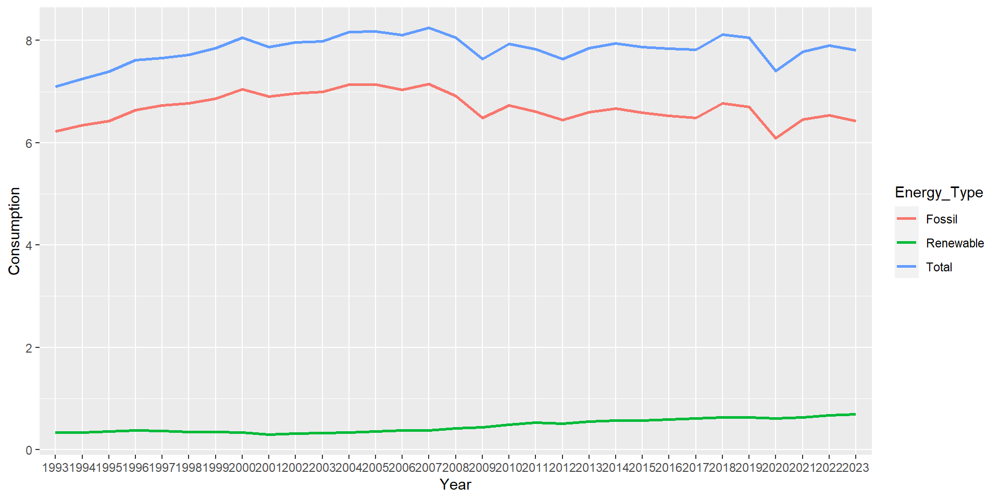
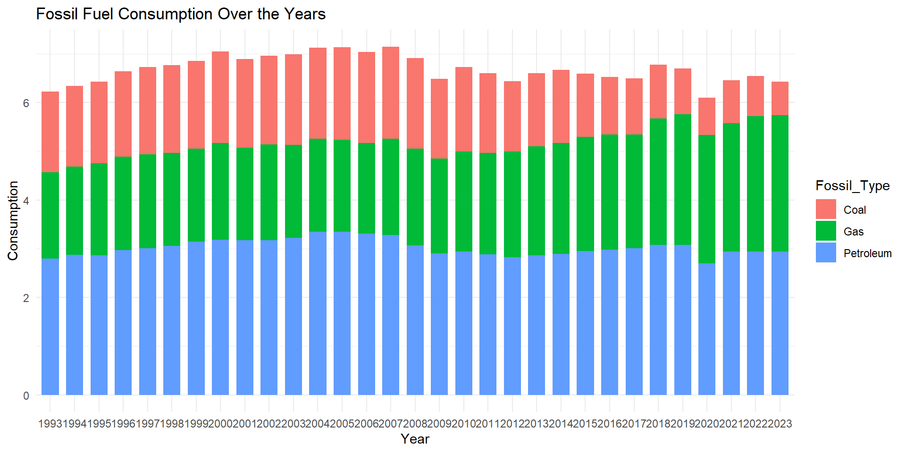
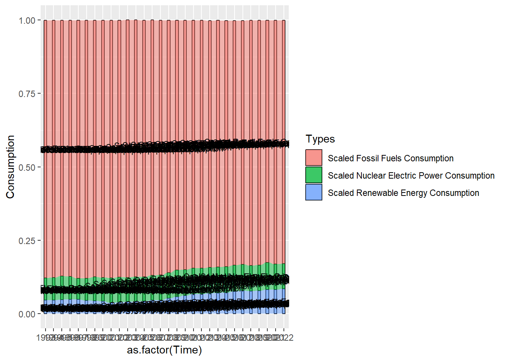
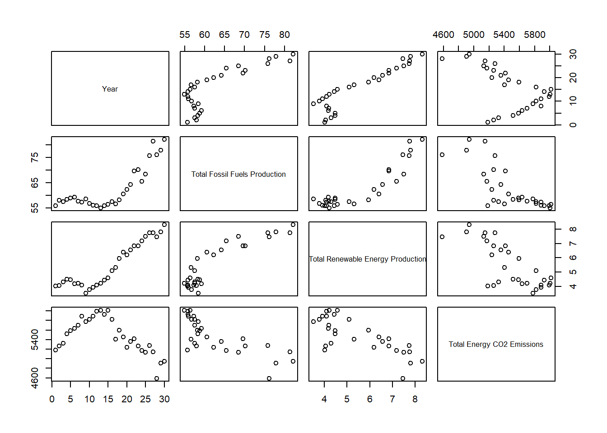

3.1 Renewable Energy’s impact on Conventional Sources
Data Source: Utilize "Table_10.1", "Table_1.2" and "Table_1.3" from the dataset.
Techniques: Utilize biplots and parallel coordinate plots to compare the increasing share of renewables with traditional energy sources. Visual elucidation of potential substitution effects between renewable and conventional sources.
We have too many data, so we will only consider the most recent 30 years.
Code
library(dplyr)
Attaching package: 'dplyr'
The following objects are masked from 'package:stats':
filter, lag
The following objects are masked from 'package:base':
intersect, setdiff, setequal, union
── Conflicts ────────────────────────────────────────── tidyverse_conflicts() ──
✖ dplyr::filter() masks stats::filter()
✖ dplyr::lag() masks stats::lag()
ℹ Use the conflicted package (<http://conflicted.r-lib.org/>) to force all conflicts to become errors
Code
energy <-read.xlsx("Table_1.1_Primary_Energy_Overview.xlsx", sep.names =" ")energy$Month <-as.Date(energy$Month, origin ="1899-12-30")energy <- energy |>filter(Month >='1993-01-01') |>filter(Month <'2023-01-01')
We are concerned about the trend over years, not the trend within years, so to further reduce the number of data points we have, we will sum up the months to get yearly energy production and consumption.
Code
energy$Year <-format(energy$Month,"%Y")yearlyenergy <- energy |>group_by(Year) |>summarise(across(where(is.numeric), sum))
We try to draw a parallel coordinate plot with the fossil fuels vs renewable energy consumption and production.
Code
energy_t <-data.frame(t(yearlyenergy[-1]))colnames(energy_t) <-as.character(yearlyenergy$Year)energy_t <- energy_t[c(1, 3, 9, 11), ]energy_t$type <-word(rownames(energy_t), -1)ggparcoord(energy_t, columns =1:(ncol(energy_t)-1), groupColumn ='type', scale ="globalminmax") +labs(title ="Fossil Fuels vs Renewable Energy Consumption and Production") +xlab("Time") +ylab("Type")

We can see that fossil fuels consumption decreased while the production increased. The consumption and production of renewable energy is increases over the years, but it is hard to say whether it affects that of fossil fuels, as it is only a small amount. In order to see more clearly the relationship, we decide to turn the production and consumption into proportion of total energy production and consumption, and compare the production and consumption separately.
Code
library(ggalluvial)
Warning: package 'ggalluvial' was built under R version 4.3.2
Code
yearlyenergy$`Scaled Fossil Fuels Production`<- yearlyenergy$`Total Fossil Fuels Production`/ yearlyenergy$`Total Primary Energy Production`yearlyenergy$`Scaled Nuclear Electric Power Production`<- yearlyenergy$`Nuclear Electric Power Production`/ yearlyenergy$`Total Primary Energy Production`yearlyenergy$`Scaled Renewable Energy Production`<- yearlyenergy$`Total Renewable Energy Production`/ yearlyenergy$`Total Primary Energy Production`production <-data.frame(t(yearlyenergy[, c("Scaled Fossil Fuels Production", "Scaled Renewable Energy Production", "Scaled Nuclear Electric Power Production")]))colnames(production) <-as.character(yearlyenergy$Year)production$Types <-rownames(production)production <- production |>pivot_longer(cols =1:(ncol(production)-1), names_to ="Time", values_to ="Production")ggplot(production,aes(x =as.factor(Time), stratum = Types, alluvium = Types, y = Production,fill = Types, label = Types))+geom_stratum(alpha = .5)+geom_alluvium()+geom_text(stat ="stratum", size =3)

Code
yearlyenergy$`Scaled Fossil Fuels Consumption`<- yearlyenergy$`Total Fossil Fuels Consumption`/ yearlyenergy$`Total Primary Energy Consumption`yearlyenergy$`Scaled Nuclear Electric Power Consumption`<- yearlyenergy$`Nuclear Electric Power Consumption`/ yearlyenergy$`Total Primary Energy Consumption`yearlyenergy$`Scaled Renewable Energy Consumption`<- yearlyenergy$`Total Renewable Energy Consumption`/ yearlyenergy$`Total Primary Energy Consumption`consumption <-data.frame(t(yearlyenergy[, c("Scaled Fossil Fuels Consumption", "Scaled Renewable Energy Consumption", "Scaled Nuclear Electric Power Consumption")]))colnames(consumption) <-as.character(yearlyenergy$Year)consumption$Types <-rownames(consumption)consumption <- consumption |>pivot_longer(cols =1:(ncol(consumption)-1), names_to ="Time", values_to ="Consumption")ggplot(consumption,aes(x =as.factor(Time), stratum = Types, alluvium = Types, y = Consumption,fill = Types, label = Types))+geom_stratum(alpha = .5)+geom_alluvium()+geom_text(stat ="stratum", size =3)

Now we can see that fossil fuel production does not show a decreasing trend as renewable energy production increase. However, the comsumption of both does seem to have a negative correlation.
3.2 Carbon Emissions and Energy Mix
Data Source: Utilize "Table_11.1".
Techniques: Implement alluvial diagrams, mosaic plots, and scatterplots to establish correlations between energy sources and U.S. carbon emissions. Visual representations showcasing the relationship between energy sources and carbon emissions, highlighting the impact of renewable integration on reducing the carbon footprint.
Again, we are only concerned with the most recent 30 years, and we consider the yearly total.
energycarbon <- yearlyenergy |>select(Year, `Total Fossil Fuels Production`, `Total Renewable Energy Production`) |>left_join(select(yearlycarbon, Year, `Total Energy CO2 Emissions`), by ='Year')plot(energycarbon)

Production for both fossil fuel and renewable energy seem to display a negative correlation with \(CO_2\) emissions, but from the plot with year, it looks like this is just due to increasing trend of production and decreasing trend in \(CO_2\) emission.
Code
energycarbon <- yearlyenergy |>select(Year, `Total Fossil Fuels Consumption`, `Total Renewable Energy Consumption`) |>left_join(select(yearlycarbon, Year, `Total Energy CO2 Emissions`), by ='Year')plot(energycarbon)
On the other hand, fossil fuel consumption and \(CO_2\) emission shows the exact same trend over time, and they have very high correlation. This shows that lower fossil fuel comsumption is accompanied by lower \(CO_2\) emission.